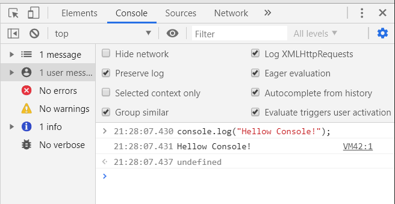

デバックモードでデバッグ - Javascript
category: Javascript

ブラウザのデバックモードの起動のしかたや見方を身につけましょう。
window.alertwindow.alertでアラートウィンドウを起動させましょう。
多くのjavaSvcript教材ではこのアラート機能をつかってプログラミングの実行確認をします。 最初に知っておくべき便利なことばです。
window.alert - Web API インターフェイス | MDNalert()「アラート関数」でデータjavascriptの入力を確認してみました。
alert()はそもそもユーザーとのコミュニケーションのために作られたシンプルな関数です。 メッセージとともにこのまま実行していいか警告することを目的につくられました。OKボタンを押さないとブラウザの処理が一旦停止します。最初での稼働の実験には最適ですが本来の意味での使いかたではありません。
これいちいち窓が出て面倒臭いですよね。
そこで「検証」機能のコンソールを使います。
検証ってなに？
検証機能は各社のブラウザに製作者用にプログラムやソースコードが想定通り機能しているかを確認するための機能です。
fierFoxでは「要素の調査」
Edgeでは「デバックモード」
googleChremeでは「検証」と名前がつけられています。
このサイトではこの機能を検証と呼びます。
検証にはJavaScriptのエラーログやデータの状態を確認できる「コンソール」モードをつかいます。
コンソール (console) の場所
- 検証をひらく方法
- ブラウザのウィンドウでマウスカーソルを乗せて右クリックし コンテキストメニューを出して「検証」を選ぶ
- コンソールモードにする。
- タブの「console」をクリックするとコンソールウィンドウに変わる。
-
googleChremeでの検証の出し方。無音です -
FireFoxでの検証の出し方。無音です
<script>
console.log("Hellow Console!");
</script>
入力したら該当するHtmlファイルをもう一度更新してコンソールを確認してみましょう。
- 「Console」タブをクリックすると上記のような画面にかわります。
- 「Default levels」 セレクター はサイトの情報の表示の有無をチェックボックス方式で制御できます。
- 文字が小さいときは 検証タブを選択中にCtrl/command + +拡大できます。
まとめ
コンソールログはjavascriptの挙動を確認できるツールです。なんかうまくいかない場合はコンソールログ